Measure Writing Guide
This guide goes through the details of an OpenStudio Measure, focusing mainly on writing new Measures and understanding existing Measures.
What is a Measure?
In building design and retrofits, the terms energy efficiency measure (EEM) and energy conservation measure (ECM) refer to a specific change that can be made to a building to reduce its energy use. As an example, if you are retrofitting an existing building and one of the ECMs suggested by the design team is "Add continuous insulation to the walls", then you can run that measure to quickly alter your model.
In OpenStudio, a measure is a set of programmatic instructions (such as an Excel macro) that makes changes to an energy model to reflect its application. In our example, the measure might find the construction used by exterior wall surfaces in the model and add a layer of continuous insulation. Measures can be written specifically for an individual model, or they may be more generic to work on a wide range of possible models.
OpenStudio measures may be created using either the OpenStudio Application or the Parametric Analysis Tool. Measures can be created from scratch or may be copied from another measure as a starting point. Users should use either the OpenStudio Application or PAT to create measures, copying files directly in the file system is not supported.
Using this Guide
Each OpenStudio measure is contained in its own folder (usually named after the measure) and contains two key files:
- measure.rb (contains the programmatic code to change the building mode)
- measure.xml (contains information about the measure that allows other people to search for and find it).
The measure may also contain tests to ensure that it works correctly and resources which are other files that the measure uses during its operation. This file structure allows OpenStudio to easily share and use measures.
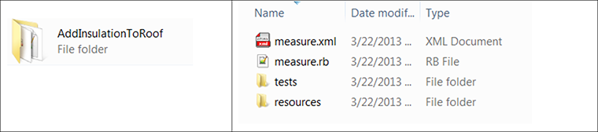
This guide is directed primarily toward measure authors; some instructions also apply to users.
This guide explains the purpose of each of these files and walks through their contents step-by-step to help you create your own measures. The programming instructions for each measure are written in a programming language called Ruby (http://www.ruby-lang.org/en/). If you are unfamiliar with the basic concepts of computer programming, it would be wise to acquire some background (preferably in the Ruby language, http://tryruby.org) before proceeding. That said, the Ruby code in these examples is simple, so anyone familiar with basic programming concepts (variables, loops, etc.) should be able to read this guide with little difficulty.
The types of files we discuss can be opened in a text editor (notepad++ is a free editor that works well for these examples, http://notepad-plus-plus.org/). File content appears in boxes to differentiate it from the rest of the text. Ellipses (...) represent code that was removed because it is not relevant to the current discussion.
a = 5
...
Measure File - measure.rb
The measure.rb file contains the Ruby program that allows the measure to make changes to the input model. The bulk of the work done when writing a measure lies in editing this file. The measure.rb file includes the beginning and end of the measure; the content of the measure is then divided into three general sections: name, arguments, and run. The following sections explain each section.
Starting and Ending the Measure
Generally, each measure is a variation of an OpenStudio ModelUserScript. You do not need to worry about what this means right now; we will explain the details later. The important point is that the text below starts and ends a measure. The class name for the measure (in light blue) is user defined. The same class name appears again on the last line where a new instance of the class is instantiated and registered with OpenStudio. It is good practice to use UpperCamelCase (CapitalizeTheFirstLetterOfEveryWord) for your class name. This must be a valid class name in Ruby; it must start with an uppercase letter and cannot contain spaces or other special characters. Everything else about the measure (name, arguments, and run) will be inserted where the ellipsis is.
class AddContinuousInsulationToWalls < OpenStudio::Ruleset::ModelUserScript
...
end
AddContinuousInsulationToWalls.new.registerWithApplication
Name
The measure's Name should be written such that another building professional (architect, engineer, etc.) can quickly understand what the measure will do when searching through a list of measures. This name is intended to be used in automatically generated reports. For example, in a table of energy savings by measure this name would identify each measure.
def name
return "Add Continuous Insulation to Walls"
end
Best practice measure names will be explicit about what they do, particularly with respect to whether they add, change, replace, or remove things from the model. Compare specific names such as:
- Replace HVAC System with DX and Natural Gas AHUs
- Add Continuous Insulation to Walls
- Remove all Electric Equipment in Specified Space Types
With vague names like:
- DX and Natural Gas AHUs
- Insulate Walls
- Modify Electric Equipment
Remember that the measure name is the first contact a user has with the measure. If the name is vague or misleading, it is detrimental to sharing and likely will not be used often.
Description
The Description should explain what the measure does in terms that general building professionals (architects, engineers, contractors, etc.) can understand. This description is intended to be used in energy modeling reports that persuade the design team to implement the measure in the actual building design. The Description is written for a general audience and should not assume that the reader is familiar with the construction and design practices suggested by the measure. Thus, the Description may include details about how the measure would be implemented, along with explanations of associated qualitative benefits. It is good practice to include citations in the measure if the description is taken from a known source or if specific benefits are listed.
def description
return "Add a layer of continuous insulation between the framing members and exterior cladding. This insulation layer is in addition to any bat insulation installed between framing members. Continuous insulation must be installed without thermal bridges other than fasteners and service openings, adding continuous insulation to a design may require longer fasteners. For more information please see <a href='http://fsc.americanchemistry.com/Exterior-Walls/Continuous-Insulation-Educational-Presentation.pdf'>here</a>."
end
Modeler Description
The Modeler Description is intended for the energy modeler using the measure. It should explain how the measure is modeled, including any requirements about how the baseline model must be set up, major assumptions made by the measure, citations of references to applicable modeling resources, etc. The energy modeler should be able to read this description and understand the changes the measure is making to the model and why. The Modeler Description is written for an expert audience and can assume that the reader is familiar with common modeling practices. This description is intended to be used in automatically generated reports. For example, in an appendix describing each the modeling approach of each measure considered for an energy savings study this description would be printed for each measure.
def modeler_description
return "This measure will search through all constructions used on exterior walls. For each construction, if the second material layer is of type OS:Material:NoMass, then that layer will be assumed to be existing continuous insulation and will be replaced by the material layer specified in this measure. If the second layer is not of type OS:Material:NoMass, then a new material layer will be inserted at the second material layer position. If any non-exterior wall surfaces use this construction, it will be cloned before being altered and the altered construction will be hard assigned to the appropriate exterior wall surfaces."
end
Arguments
Inside this method, you describe which, if any, input parameters the user should be able to change before running the measure. In the example "Add Continuous Insulation to Walls", you might want the user to specify the thickness of the insulation along with the R-value per inch of thickness. When a measure has input parameters that the user can edit, the user can change the input values to perform a parametric analysis to answer "what-if" questions and find the best option.
The arguments section opens and closes as follows:
def arguments(model)
args = OpenStudio::Ruleset::OSArgumentVector.new
...
return args
end
On the first line, you start the method and pass in the model, in case the arguments presented to the user are model dependent. For example, if the user can only choose from air loops in the model, you should present only valid air loop names. The second line sets the variable that will hold the arguments the user can edit. The last line passes these arguments back to the user to fill out.
In our example, you might want to give the user two inputs: insulation thickness and R-value per inch of insulation. The argument for insulation thickness would look like this:
insl_thckn = OpenStudio::Ruleset::makeDoubleArgument('insl_thckn',true)
insl_thckn.setDisplayName('Insulation Thickness (in)')
insl_thckn.setDefaultValue(1.5)
args << insl_thckn
The first line is a command to create a new argument of the type double (more on the arguments types later) and assign it to the variable "insl_thckn". The "true" at the end of this line indicates that the argument is required; "false" indicates that the argument is not required. On the second line, the display name of the argument is set. The user will see this in the graphical user interface (GUI). It is good practice to identify the units of the argument inside parentheses at the end of the display name so the user knows what value to input. On the third line, you specify the default value for the argument. This default value is presented initially to the user, but the user can change the value in the GUI.
Types of Arguments
You can create a few types of arguments
Double
A double argument is any real number such as 1.0, -1.5, or 50.5.
v1 = OpenStudio::Ruleset::OSArgument::makeDoubleArgument('v1', false)
Integer
An integer argument is any real whole number such as 1, -2, or 51.
v2 = OpenStudio::Ruleset::OSArgument::makeIntegerArgument('v2', false)
Boolean (Bool)
A boolean argument gives the user the choices of true or false.
v3 = OpenStudio::Ruleset::OSArgument::makeBoolArgument('v3', false)
String
A string argument allows the user to input text.
v4 = OpenStudio::Ruleset::OSArgument::makeStringArgument('v4', false)
Choice
A choice argument allows you to limit the user to picking from a set list of options. For the choice argument, you must create the choices and pass them into the argument.
chs = OpenStudio::StringVector.new
chs << "Option 1"
chs << "Option 2"
v5 = OpenStudio::Ruleset::OSArgument::makeChoiceArgument('v5', chs, true)
Possible values for the choice arguments can also be extracted from the model. For example, the following would give the user a choice of any zones in the model, by zone name.
v6 = OpenStudio::Ruleset::makeChoiceArgumentOfWorkspaceObjects
("v6","OS_Thermal_Zone".to_IddObjectType,model,true)
Defaults and Required Arguments
When deciding how to ask the user for each input, you should consider whether the input is required and whether there is a reasonable default value. Required arguments are inputs that the measure needs to run, such as the lighting level for each space. Non-required arguments are optional, but you must make clear to the user what will happen if no value is provided. Default values may be based on current best practices (e.g., current lighting power reductions to 0.8 W/ft2 are possible), or they may be chosen specifically for the model (e.g., choose the most common space type for adjusting the lighting power). Where the argument is not required but there is a good default, it is good practice to set the argument to be required anyway, as there is no burden on the user to provide any input.
| Required? | Has a Default? | Best Practice? |
|---|---|---|
| Yes | Yes | Yes |
| Yes | No | Yes |
| No | Yes | No |
| No | No | Must be documented |
Run
The run method is where all the magic happens. This is where you write the programmatic instructions that take the user inputs and change the energy model in specific ways. This method has more pieces than the name or arguments method. We explain each piece separately, and then show all the pieces together.
The run method starts much like the other methods:
def run(model, runner, user_arguments)
super(model, runner, user_arguments)
...
return true
end
The super line is boilerplate; it is necessary, but you do not need to worry about how it works. Just before the end to the run method there should be a "return true" line. If a measure does not return "true," OpenStudio will think that the measure failed and the simulation workflow will stop.
Input Validation
When the user applies a measure to a model, he or she first fills in the inputs the author exposed in the arguments method. Because the user may have entered bad values, you first need to validate the input in the run method. For example, the user may have indicated that the building is 1 ft long instead of 100 ft long, or the input asked for an integer and the user input 2.5. Regardless, you must check the inputs before moving forward.
The first step is to make sure that each required argument appears, has a value, and the value is the right type (strings are strings, doubles are doubles, etc.). This part of the error checking is built into OpenStudio and is shown below. If the argument fails to validate, this built-in method will give the user specific error messages that describe the problem. The second line is "return false." This tells the run method to stop here; "false" indicates that the measure's run method did not complete successfully.
if not runner.validateUserArguments(arguments(model), user_arguments)
return false
end
Assuming that all the required inputs are present and have the right kinds of values, you next need to ensure that values make sense in the context of the script. For example, -2 is a valid integer, but it is not a valid number of chillers in a building.
The first step in this type of error checking is to pull the values from the "user_arguments" variable and assign them to variables in the run method. Best practice is to use the same variable names in the arguments method and the run method.
v1 = runner.getDoubleArgumentValue('v1',user_arguments)
v2 = runner.getIntegerArgumentValue('v2',user_arguments)
v3 = runner.getBoolArgumentValue('v3',user_arguments)
v4 = runner.getStringArgumentValue('v4',user_arguments)
v5 = runner.getStringArgumentValue('v5',user_arguments)
v6 = runner.getOptionalWorkspaceObjectChoiceValue('v6',user_arguments, model)
Now that the user inputs have been assigned to variables, you need to check the validity of each value. If you encounter a problem, you need a way to let the user know what happened (and how to fix it). We will now take a brief detour to explain how you can pass this type of information back to the user. We will then continue on with input validation.
Info, Warning, and Error Messages
You can send three types of messages to the user from the measure. These messages will be shown in the GUI when the measure is run. You can thus let the user know something, but does not need to force the user to go into obscure error and output files. Each message has a specific purpose. The messages below are short for clarity; however, there is no limit to the length of the messages passed. Best practice messages will be concise, yet specific enough that the user knows exactly where to go to address any issue.
Info Messages
Info messages simply let the user know what happened as the measure was running. Info messages do not cause the measure to fail or stop running. In our example of "Add Continuous Insulation to Walls", you might decide to tell the user the number of surfaces to which insulation was added. In Ruby, inserting "#{num_surfaces}" in the message tells Ruby to convert the value of the variable "num_surfaces" to a string and substitute the result into the message.
runner.registerInfo("Added insulation to #{num_surfaces} surfaces.")
Warning Messages
Warning messages enable you to warn the user about something that may be critical to the assumptions or that significantly affects how the measure runs. Warning messages do not cause the measure to stop running. In our example of "Add Continuous Insulation to Walls", you might want to warn the user if the insulation thickness entered exceeds 12 inches, because adding more than 12 inches of insulation is unusual but not unheard of.
runner.registerWarning("#{insul_thckns} inches of insulation seems high.")
Error Messages
Error messages are used when the measure simply cannot continue. Perhaps the user entered -1.5 for a fractional schedule value. Error messages stop the measure from running. Error messages should point the user to the specific error and suggest a way to fix or avoid it. The measure should return "false" and issue an error message:
runner.registerError("v1 must be greater than or equal to 0 and less than or equal to 1. You entered #{v1}.")
return false
Input Validation (Continued)
Now that we have covered how to send information messages back to the user, we will continue discussing how to validate the input. In this first example, we assume that v1 is a fractional value; therefore, it must be between 0 and 1.
if v1 < 0 or v1 > 1
runner.registerError("v1 must be greater than or equal to 0 and less than or equal to 1. You entered #{v1}.")
return false
end
This error checking is performed with a Ruby if statement. If the input check test fails, an error message is registered, and then the measure's run method returns "false," stopping the measure from continuing.
Input validation can be as simple or as detailed as the situation requires. The goal is to catch any bad inputs before wasting time making nonsensical changes to the model and alert the user of the problem so it can be corrected as quickly as possible.
Making Changes to the Model
Once all the inputs have been checked, it is time to start doing something to the model. A vast number of possible changes can be made, so rather than describing each one, this section gives a few examples and explains how to determine which commands to use to do other things.
The goal of the first example will be to loop through all the spaces in the model and check whether the space is assigned to a thermal zone. If it not assigned to a thermal zone, you need to create a new thermal zone and assign this space to it.
def run(model, runner, user_arguments)
super(model,runner,user_arguments)
spaces = model.getSpaces
spaces.each do |space|
if space.thermalZone.empty?
new_thermal_zone = OpenStudio::Model::ThermalZone.new(model)
space.setThermalZone(new_thermal_zone)
runner.registerInfo("Space #{space.name} didn't have a thermal zone,
so a new thermal zone was created and assigned.")
end
end
end
The first command is to get all the spaces in the model. Whenever you want a vector of a certain class of objects from a model, the command is "get#{ClassName}s" (e.g., getThermalZones, getSpaces). Next you start a loop that iterates through all spaces in the model. Within this loop the next command checks to see if the space has a thermal zone assigned. Now you begin to get into the programming weeds... be patient, this is one of the hardest parts to understand.
Optionals and .get
OpenStudio is written in C++, and translated to be available in Ruby by software called SWIG. This auto-translation leaves one artifact that Ruby users generally do not deal with: the "optional" return type.
Some OpenStudio methods return an "OptionalSomething" (Ruby hint: if you ever want to know the type of a variable in Ruby, you can use the ".class" method to find out). An optional result is either empty (the method did not return anything) or it points to what you are trying to get. Look at the example line.
if space.thermalZone.empty?
In the online documentation for the "Space" object, the method ".thermalZone" is defined as:
boost::optional<ThermalZone> openstudio::model::Space::thermalZone( ) const
This indicates that calling "space.thermalZone" returns a "boost::optional< ThermalZone >" result. Ignoring the syntax for now, the main point is that the method returns an "OptionalThermalZone" and not a "ThermalZone". To learn whether this "OptionalThermalZone" points to an actual "ThermalZone," you use the ".empty?" method. If the result is empty, it does not point to an actual "ThermalZone" and cannot be used. In the example if "space.thermalZone.empty?" is true, the space has no thermal zone. Calling "get" on an empty "OptionalSomething" will crash the measure.
If an "OptionalSomething" is not empty, it points to an actual "Something" and can be used. To get the actual "Something" that the variable points to, you can use the ".get" method. In the example if "space.thermalZone.empty?" is not true, you can use ".get" to get a reference to the space's thermal zone.
if not space.thermalZone.empty?
thermal_zone = space.thermalZone.get
end
The OpenStudio API has many places where optional results are returned. The API documentation can be very helpful for determining the type of result a given method returns. Several methods in OpenStudio return a "ModelObject" (".clone", ".optionalWorkspaceObjectChoiceValue", etc.). This is fine for many purposes; however, if you want to test if the object returned is of a particular type (e.g., is it a Space or a SpaceType), you will have to try converting the object to those types using the ".to_#{ClassName}" (".to_Space", ".to_SpaceType", etc). Those methods will return an optional result, which will be empty if the conversion failed and will contain the value if it succeeded. If the conversion was successful, you can use all the methods of that type on the result.
new_object = old_object.clone(model)
if not new_object.to_LightsDefinition.empty?
#what you cloned was a LightsDefinition
new_light_def = new_object.to_LightsDefinition.get
else
#what you cloned was not a LightsDefinition
end
Don't worry if you did not understand all this on the first pass, keep going forward and look at the next example, referring back as needed.
Info, Warning, and Error Messages (Continued)
Beyond the info, warning, and error messages that you can give to the user, three other specific pieces of information can be returned: the initial condition, the final condition, and whether the measure was applicable to this particular model.
Initial Condition
The initial condition is a way for you to give the user a "before" snapshot of the model with respect to what the measure will change. Reporting the initial condition is optional, but is good practice.
runner.registerInitialCondition("Model started with #{num_flrs} floors")
Final Condition
The final condition is a way for you to give the user an "after" snapshot of the model with respect to what the measure changed. Reporting the final condition is optional, but is good practice. The initial and final conditions can be useful when explaining the specific changes the measure made to the model.
runner.registerFinalCondition("Model ended with #{num_flrs} floors")
Not Applicable
Not all measures are applicable to all models. For example, a measure called "Replace all windows with triple-paned windows" would not be applicable to a building with no windows. The fact that a measure ran successfully, but made no changes to the model, should be recorded. Imagine that the user applied the example measure to many buildings and looked at its impact across all the buildings. For the building with no windows, the measure was "Not Applicable", so the user could therefore exclude this building from the impact analysis. It is good practice to track whether a measure makes any changes to the model, and register it as "Not Applicable" if no changes were made.
runner.registerAsNotApplicable("Measure not applicable because XYZ")
return true
This extended example shows how the initial condition, final condition, and applicability flags are used.
def run(model, runner, user_arguments)
super(model,runner,user_arguments)
spaces = model.getSpaces
num_spcs_with_tz = 0
num_spcs_no_tz = 0
num_tzs_created = 0
spaces.each do |space|
if space.thermalZone.empty?
num_spcs_no_tz += 1
new_thermal_zone = OpenStudio::Model::ThermalZone.new(model)
num_tzs_created += 1
space.setThermalZone(new_thermal_zone)
runner.registerInfo("Space #{space.name} didn't have a thermal zone,
so a new thermal zone was created and assigned.")
else
num_spcs_with_tz += 1
end
end
runner.registerInitialCondition("The model had #{num_spcs_with_tz}
spaces with a thermal zone and
#{num_spcs_no_tz} without a thermal zone")
runner.registerFinalCondition("#{num_tzs_created} thermal zones were
created. All spaces now have a thermal
zone")
if num_tzs_created == 0
runner.registerAsNotApplicable("Not applicable because all spaces
already had thermal zones")
end
return true
end
What Methods Are Available?
After looking at the examples above, you might be thinking "I understand the structure of a measure, but what if I want to write a measure that does something besides add thermal zones to spaces?" This is a good question.
The next example illustrates the process of going from an idea for a measure through writing the measure, assuming little behind-the-scenes knowledge of OpenStudio.
The Idea
Write a measure that will remove all lights currently in the "Enclosed Office" space type and replace them with new lights that have a lighting power density (LPD) of 10 W/m2.
Figuring Out the Modeling Approach
The first thing to do is understand how the measure would be modeled in OpenStudio, and make a list of the objects involved. The easiest way to do this is to open the OpenStudio Application and look through the GUI. In this case, we'll start on the "Space Types" tab.

On this tab, first click on the first object (in the left column) is "Space Type." Inside the Space Type, next to the lights icon, the term "Definition" appears. The name of this particular definition is "ASHRAE_90.1-2004_Office_LPD." To learn more about this definition, go to the "Loads" tab.
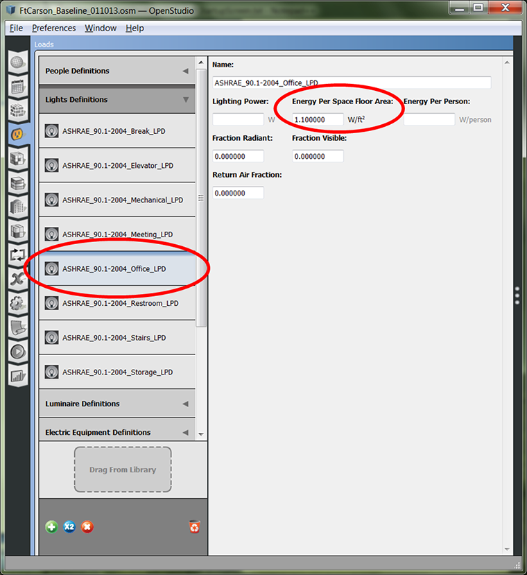
On the left side under the "Loads" tab is a category called "Lights Definitions." Under this category is the definition "ASHRAE_90.1-2004_Office_LPD" that was referenced on the "Space Types" tab. One field is titled "Energy Per Space Floor Area" with units of "W/ft2." Although the GUIs may show IP units, the methods of the OpenStudio model are all written in SI units.
Restating the Measure Using OpenStudio Terms
Restate the measure using the names of the OpenStudio model objects found during the GUI exploration:
Find the SpaceType called "Enclosed Office". Replace any LightsDefinitions referenced by Lights in this SpaceType with a new LightsDefinition having "Energy Per Space Floor Area" = 10 W/m2.
Finding the OpenStudio Methods: Using the Documentation
All the OpenStudio code documentation lives online at https://s3.amazonaws.com/openstudio-sdk-documentation/index.html. Open this website.
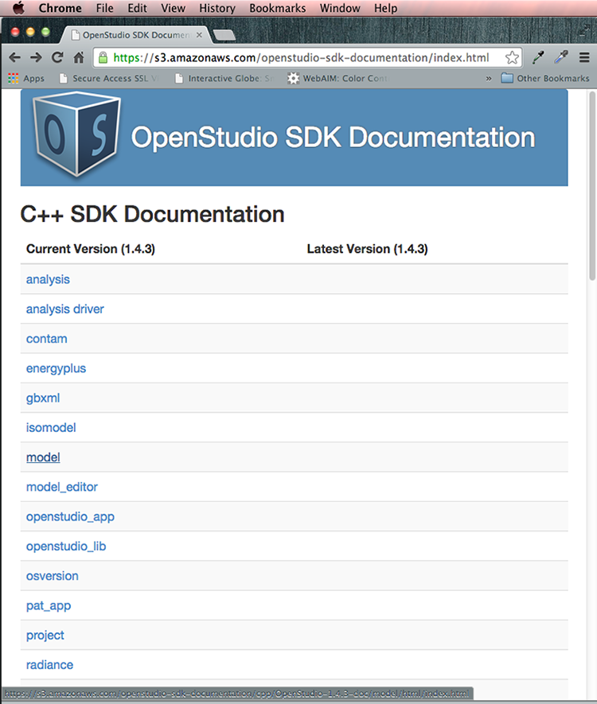
Click on the model link to explore.
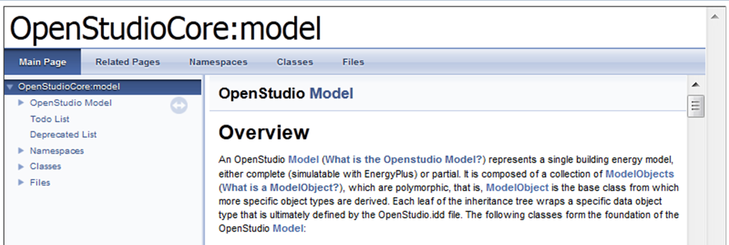
This will take you to the OpenStudio Model Overview page.
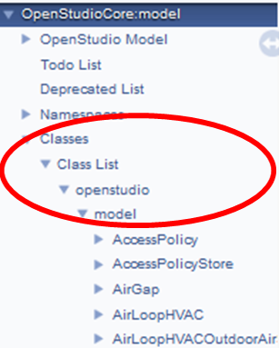
Select the "Objects/Objects List" to find more information on individual model objects. 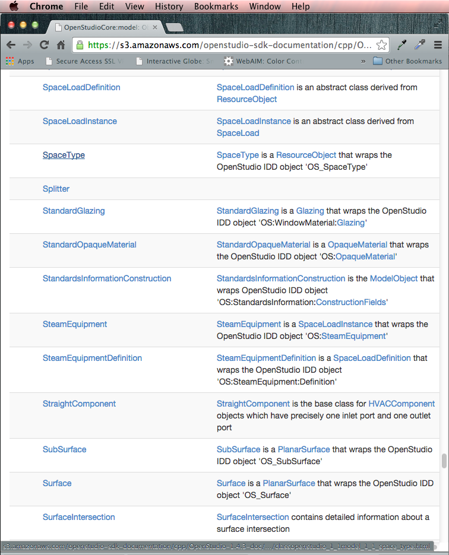
Click "SpaceType"."
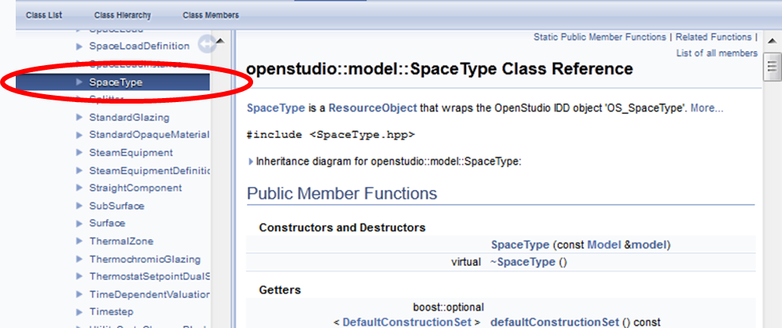
This screen contains the documentation for the SpaceType class. The methods are generally split into four categories: Constructors and Destructors, Getters, Setters, and Other. SpaceType is a base class of ResourceObject. You can look into the ResourceObject for additional methods beyond what is in the SpaceType documentation.
Understanding the Methods
At first glance, the methods look cryptic, not at all like those shown in the examples, because this is the C++ documentation and the methods used are the Ruby translation of these same methods. These methods can be decoded as follows:
The name of the method:
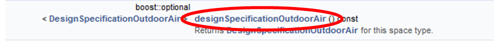
The method names are generally descriptive enough that it is possible to understand what they do without any other information. Here is how the method would be used in Ruby:
design_spec_oa = space_type.designSpecificationOutdoorAir
The type of object returned by the method:
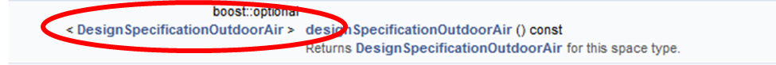
Methods Return Types:
bool = true/false
double = a number
std::string = text
void = does not return anything
std::vector
boost::optional
The written description of the method:
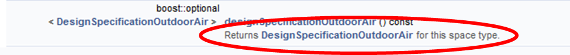
The inputs needed by the method:
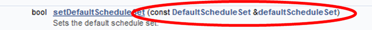
Methods that do not need inputs have empty parentheses (). Ruby allows you to skip adding the empty parentheses when you call methods with no arguments. You can ignore the const and & C++ keywords in the declarations for now.
Using the Documentation for the Example Measure
With an understanding of how to read the documentation, the example measure continues.
The first step is to find the SpaceType called "Enclosed Office". As you loop through all the spaces in the model, you can use the ".name" method to get the name of each space. Note that the ".name" method returns an "OptionalString"; however, OpenStudio will assign names to all model objects, so there is no need to check if the name is empty before using it. You can use the ".match" method to see if the SpaceType's name matches the value you are looking for.
space_types = model.getSpaceTypes
space_types.each do |space_type|
if space_type.name.get.match("Enclosed Office")
#do something
end
end
Once you have found a SpaceType matching the name you are looking for, you need to get all the Lights in Spaces of this SpaceType. The documentation for SpaceType includes a method to get a vector of all Lights in Spaces of this SpaceType:

You can extend the code to then loop over all these Lights:
space_types = model.getSpaceTypes
space_types.each do |space_type|
if space_type.name.get.match("Enclosed Office")
space_type.lights.each do |light|
#do something
end
end
end
Now you need to make a new LightsDefinition to replace the ones these Lights currently use. The documentation for LightsDefinition shows a constructor that expects a Model as the input.

Constructors translated from C++ to Ruby take the following form. The only difference may be which arguments the constructor requires; usually it is simply a Model.
new_thing = OpenStudio::Model::NewThingClassName.new(model)
Now, figure out how to set the LPD of the LightsDefinition to 10 W/m2. The LightsDefinition documentation presents a method.
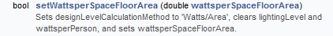
You will also want to name the new LightsDefinition object for better user comprehension. Most OpenStudio objects have a ".setName(new_name)" method. You can put this together to make the LightsDefinition object.
new_lights_def = OpenStudio::Model::LightsDefinition.new(model)
new_lights_def.setWattsperSpaceFloorArea(10.0)
new_lights_def.setName("10 W/m^2 Lights Definition")
Now that you have a new LightsDefinition object, you need to figure out how to replace the existing LightsDefinition with the new one. The Lights documentation contains a method to set the lights definition.
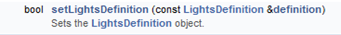
Putting this all together, we get:
new_lights_def = OpenStudio::Model::LightsDefinition.new(model)
new_lights_def.setWattsperSpaceFloorArea(10.0)
new_lights_def.setName("10 W/m^2 Lights Definition")
space_types = model.getSpaceTypes
space_types.each do |space_type|
if space_type.name.match("Enclosed Office")
lights = space_type.lights
lights.each do |light|
light.setLightsDefinition(new_lights_def)
end
end
end
Putting It All Together
The following example is a complete measure.rb file, including all the pieces described previously. Notice that there are comments in this script. It is good practice to include comments directly inside the measure.rb file, so anyone who opens the file can understand what is happening. These comments were omitted from the previous examples because the main text described what was happening.
# a pound sign denotes a comment
#start the measure
class ReplaceLightsInSpaceTypeWithLPD < OpenStudio::Ruleset::ModelUserScript
#define the name that a user will see
def name
return "Replace All Lights in a Given Space Type with a New LPD"
end
#define the arguments that the user will input
def arguments(model)
args = OpenStudio::Ruleset::OSArgumentVector.new
#make an argument for space type name
stn = OpenStudio::Ruleset::OSArgument::makeStringArgument('stn',true)
stn.setDisplayName('Space Type Name')
args << stn
#make an argument for LPD
lpd = OpenStudio::Ruleset::OSArgument::makeDoubleArgument('lpd',true)
lpd.setDisplayName('Lighting Power Density (W/m^2)')
lpd.setDefaultValue(1.0)
args << lpd
return args
end #end the arguments method
#define what happens when the measure is run
def run(model, runner, user_arguments)
super(model, runner, user_arguments)
#use the built-in error checking
if not runner.validateUserArguments(arguments(model), user_arguments)
return false
end
#assign the user inputs to variables
stn = runner.getStringArgumentValue('stn',user_arguments)
lpd = runner.getDoubleArgumentValue('lpd',user_arguments)
#check the LPD for reasonableness
if lpd < 0 or lpd > 100 #error on impossible values
runner.registerError("Lighting Power Density (W/m^2) must be
greater than 0 and less than 100.
You entered #{lpd}.")
return false
elsif lpd > 50 #warning on unrealistic but possible values
runner.registerWarning("A Lighting Power Density of #{lpd} W/m^2
seems a little high. Measure will continue,
but double-check this isn't a typo.")
end
#create a variable and array for tracking changes to model
num_spctyp_changed = 0
spctyp_ch_log = []
#make changes to the model
#loop through all space types in the model
model.getSpaceTypes.each do |space_type|
if space_type.name.get.match("#{stn}")
num_spctyp_changed += 1 #log change
runner.registerInfo("Space Type called #{space_type.name} matches
#{stn}.")
#loop through all lights in the space type
space_type.lights.each do |light|
#get the old lpd from the existing lights definition, if exists
old_lpd = "not per-area"
if not light.lightsDefinition.wattsperSpaceFloorArea.empty?
old_lpd = light.lightsDefinition.wattsperSpaceFloorArea.get
end
#add the old and new condition to the change log
spctyp_ch_log << [space_type.name, old_lpd]
#make a new lights definition
new_lights_def = OpenStudio::Model::LightsDefinition.new(model)
new_lights_def.setWattsperSpaceFloorArea(lpd)
new_lights_def.setName("#{lpd} W/m^2 Lights Definition")
#replace the old lights def with the new lights def
light.setLightsDefinition(new_lights_def)
end
end
end
#report out the initial and final condition to the user
initial_condition = ""
initial_condition << "There are #{num_spctyp_changed} space types
that match the name #{stn}. "
final_condition = ""
spctyp_ch_log.each do |ch|
initial_condition << "Space type #{ch[0]} had an lpd of #{ch[1]}
W/m^2. "
final_condition << "space type #{ch[0]}, "
end
final_condition << "were all set to an lpd of #{lpd} W/m^2"
runner.registerInitialCondition(initial_condition)
runner.registerFinalCondition(final_condition)
#report if the measure was Not Applicable
if num_spctyp_changed == 0
runner.registerAsNotApplicable("Not Applicable -
No space types matched #{stn}.")
end
return true
end #end the run method
end #end the measure
#boilerplate that allows the measure to be use by the application
ReplaceLightsInSpaceTypeWithLPD.new.registerWithApplication
Measure File - measure.xml
The measure.xml file contains metadata that allow the measure to be filed into an organizational structure, provide an explanation about what the measure does and how it works, and tell the GUI where in the workflow the measure can go. The GUI creates a new measure.xml file when you click on the "Create a New Measure" button. In general, you should not need to make any changes to the measure.xml file manually. The OpenStudio Application and PAT detect any changes that are made to measures in your "My Measures" directory when you press the "Sync Project Measures with Library" button. Changes to the name, description, modeler description or any other measure properties will be updated in the measure and the measure will be given a new version identifier. However, there are a few limited cases when you will need to modify the measure.xml file by hand. These cases are 1) changing the measure's author information (i.e. provenance), 2) changing the tags which determine where the measure is listed in the BCL measure taxonomy, 3) changing attributes which are used when searching for the measure on the BCL. To make changes to any of these items you will have to edit the appropriate section (described below) in the measure.xml file by hand, then press the "Sync Project Measures with Library" button in either the OpenStudio Application or PAT to assign a new version identifier.
Provenance
The Provenance section describes who wrote the measure and when. As author, you may identify yourself however you desire; current convention is to use first initial of first name, followed by full last name (Andrew Parker -> aparker). You may name multiple authors. The time format follows ISO 8601 (http://en.wikipedia.org/wiki/ISO_8601).
<provenances>
<provenance>
<author>aparker</author>
<datetime>2013-01-28T15:00:00Z</datetime>
</provenance>
<provenance_required>true</provenance_required>
</provenances>
Tags
The Tags section describes where the measure lives in the BCL Measure taxonomy. This taxonomy is used to indicate where in the GUI the measure should be displayed. If the Tags section is blank, the measure will not show up in the GUI.
BCL Measures Taxonomy
The BCL Measures Taxonomy is available at http://bcl.nrel.gov/api/taxonomy/measure, the current taxonomy is:
- Envelope
- Fenestration
- Daylighting
- Form
- Infiltration
- Opaque
- Electric Lighting
- Controls
- Lighting Equipment
- Equipment
- Controls
- Electric Equipment
- HVAC
- Controls
- Heating
- Cooling
- Heat Rejection
- Energy Recovery
- Distribution
- Ventilation
- Whole System
- Refrigeration
- Service Water Heating
- Water Use
- Water Heating
- Distribution
- Onsite Power Generation
- Photovoltaic
- Reporting
- QAQC
- Troubleshooting
The place inside the measure taxonomy is indicated Level1.level2. An example is Envelope.Fenestration.
<tags>
<tag>Envelope.Fenestration</tag>
</tags>
Attributes
The Attributes section gives additional metadata that allow the GUI to display the measure in the correct place in the workflow and show only measures that can be used by a particular tool. There are currently two standardized attributes used for measures "Intended Software Tool" and "Intended Use Case", these are populated when a new measure is created. If you wish to change these after the measure has been created you must edit the measure.xml file manually. Other attributes may be added but are not used by OpenStudio applications.
Intended Software Tool
The Intended Software Tool attribute lists the tools that this measure is intended to be used by. Software tools may choose to only display measures which list them as an intended software tool. A measure can list more than one tool as intended software tool. The list of software tools used by OpenStudio is:
- Apply Measure Now - measures intended to be run directly on the current model in the OpenStudio Application. Only Model measures may be used in the Apply Measure Now feature.
- OpenStudio Application - measures intended to be run as part of the simulation workflow in the OpenStudio Application.
- Parametric Analysis Tool - measures intended to be run as part of the simulation workflow in PAT.
- Analysis Spreadsheet - measures intended to be run on the cloud using the OpenStudio Analysis Spreadsheet.
Example xml:
<attributes>
<attribute>
<name>Intended Software Tool</name>
<value>Apply Measure Now</value>
<datatype>string</datatype>
</attribute>
<attribute>
<name>Intended Software Tool</name>
<value>OpenStudio Application</value>
<datatype>string</datatype>
</attribute>
</attributes>
Intended Use Case
The Intended Use Case attribute describes the typical scenarios that this measure will be used in. Software tools may choose to only display measures which apply to their intended use case. A measure can list more than one intended use case. The list of use cases used by OpenStudio is:
- Model Articulation - measures which create building modeling content. Examples include a building geometry footprint generator or a measure that adds an HVAC system to a model which does not have one.
- Calibration - measures which alter an existing model for the purposes of calibration. Examples include measures which fine tune infiltration levels or adjust existing lighting power to account for uncertainty in operational schedules.
- Sensitivity Analysis - measures which alter an existing model to determine what parameters are most sensitive. Examples include a measure which makes all walls adiabatic or a measure which removes all lights from the building.
- New Construction EE - measures which are appropriate energy conservation measures for new construction applications. Examples include increased framing depth or reduced window to wall ratio.
- Retrofit EE - measures which are appropriate energy conservation measures for retrofit applications. Examples include replacing incandescent light fixtures with high efficiency T-8s or adding occupancy sensors to uncommonly used spaces.
- Automatic Report Generation - measures which report human or machine readable content. Examples include a report showing total floor area per space type or a report which plots energy use as a function of outdoor temperature.
Example xml:
<attributes>
<attribute>
<name>Intended Use Case</name>
<value>Model Articulation"</value>
<datatype>string</datatype>
</attribute>
<attribute>
<name>Intended Use Case</name>
<value>New Construction EE</value>
<datatype>string</datatype>
</attribute>
</attributes>
Advanced Topics
EnergyPlus Measures
Measures are usually written to work on an OpenStudio model. This is preferred because it allows you to use the OpenStudio Model API, which includes specialized methods for each type of object in the OpenStudio Model. However, when a particular EnergyPlus feature is not yet exposed in the OpenStudio Model, you may choose to write a measure that operates on the EnergyPlus data model directly. Measures of this type are run only after the model is translated from OpenStudio to EnergyPlus.
Below are some specific code differences for EnergyPlus versus. Model (OpenStudio) measures.
The class line should refer to "WorkspaceScript" versus "ModelScript", as shown in the following example:
class ConstructionTakeOff < OpenStudio::Ruleset::WorkspaceUserScript
The argument will take a "workspace" in place of "model".
def arguments(workspace)
Similar to argument, the "run" method also takes a "Workspace" in place of a "Model".
def run(workspace, runner, user_arguments)
super(workspace, runner, user_arguments)
The API available to work with EnergyPlus objects directly is simpler than the OpenStudio Model API; it allows for changing .idf fields directly, getting all objects of a certain type, etc. This functionality is [documented][10] under the utilities project in the classes "Workspace" and "WorkspaceObject".
Finding and Inspecting EnergyPlus Objects
The following example shows how to find and loop through EnergyPlus objects. You can find objects in an EnergyPlus Workspace based on their IDD type (e.g., "BuildingSurface:Detailed"). These types can be found in the EnergyPlus documentation shown in Section 5.4. The IDF model is not an object model. As a result, instead of requesting a name we access specific fields by index in the IDD, starting at 0 and going up, such as ".getString(2)".
#get all surfaces and constructions in model
heat_transfer_surfaces = workspace.getObjectsByType("BuildingSurface:Detailed".to_IddObjectType)
#the line below won't get other objects such as Construction:InternalSource.
constructions = workspace.getObjectsByType("Construction".to_IddObjectType)
#report initial condition
runner.registerInitialCondition("The model has #{constructions.size} construction objects.")
#array for constructions that are used on a heat transfer surface
used_constructions_names = [] #just holds names
#get names of constructions used in the model
heat_transfer_surfaces.each do |heat_transfer_surface|
construction = heat_transfer_surface.getString(2).to_s #(0) is name, (1) is Surface Type, etc.
used_constructions_names << construction
end
Adding EnergyPlus Workspace Objects
The following example shows how to add a new EnergyPlus object into the Workspace. A string is created, using Ruby's string substitution mechanisms to set variable values, and then the string is turned into IdfObject and finally added to the Workspace.
#array to hold new IDF objects
string_objects = []
#loop through constructions adding ComponentCost:LineItem for each
used_constructions_names.sort.uniq.each do |used_construction_name|
#.unig will only loop through unique values in an array
#IDF object text for ComponentCost:LineItem
string_objects << "
ComponentCost:LineItem,
#{used_construction_name}_TakeOff, !- Name
, !- Type
Construction, !- Line Item Type
#{used_construction_name}, !- Item Name
, !- Object End Use Key
, !- Cost per Each {$}
0.000000000001; !- Cost per Area {$/m2}
"
end
#add all of the strings to workspace to create IDF objects
string_objects.each do |string_object|
idfObject = OpenStudio::IdfObject::load(string_object)
object = idfObject.get
wsObject = workspace.addObject(object)
end
Editing EnergyPlus Workspace Objects
The following example shows how to access and edit EnergyPlus objects in the Workspace.
#get OutputControl:Table:Style object that was generated in forward translation from OSM to IDF
table_style = workspace.getObjectsByType("OutputControl:Table:Style".to_IddObjectType)
#even though there is just a single object, it is still in an array
if not table_style.empty?
# we can access the first object in the array using table_style[0]
if table_units == "Inch-Pound"
#use setString to change the field value to request IP units
table_style_ip = table_style[0].setString(1,"InchPound")
else
#will result in SI units in tables
table_style_si = table_style[0].setString(1,"")
end
end
Finding Documentation on EnergyPlus Objects
The "[InputOutputReference.pdf][11]" document that ships with EnergyPlus describes every EnergyPlus object. Below is a screenshot of part of the documentation for the "ComponentCost:LineItem" object. It describes which fields are required versus optional, and what kinds of data are expected for each field. EnergyPlus also ships with example models that show each object being used in a model. In the "Examples" folder is a spreadsheet that documents the examples.

Putting It All Together - A Complete WorkspaceUserScript
The script creates a ComponentCost:LineItem object for each construction used in the model.
#start the measure
class ConstructionTakeOff < OpenStudio::Ruleset::WorkspaceUserScript
#define the name that a user will see
def name
return "Create Envelope Quantity TakeOff"
end
#define the arguments that the user will input
def arguments(workspace)
args = []
#make an argument for table units
chs = OpenStudio::StringVector.new
chs << "Inch-Pound"
chs << "SI Units"
table_units = OpenStudio::Ruleset::OSArgument::makeChoiceArgument("table_units",chs)
table_units.setDisplayName("Choose Units for EnergyPlus Output HTML")
table_units.setDefaultValue("Inch-Pound")
args << table_units
return args
end #end the arguments method
#define what happens when the measure is run
def run(workspace, runner, user_arguments)
super(workspace, runner, user_arguments)
#assign the user inputs to variables
table_units = runner.getStringArgumentValue("table_units",user_arguments)
#get all surfaces and constructions in model
heat_transfer_surfaces = workspace.getObjectsByType("BuildingSurface:Detailed".to_IddObjectType)
#the line below won't get other objects such as Construction:InternalSource.
constructions = workspace.getObjectsByType("Construction".to_IddObjectType)
#report initial condition
runner.registerInitialCondition("The model has #{constructions.size} construction objects.")
#array for constructions that are used on a heat transfer surface
used_constructions_names = [] #just holds names
#get names of constructions used in the model
heat_transfer_surfaces.each do |heat_transfer_surface|
construction = heat_transfer_surface.getString(2).to_s #(0) is name, (1) is Surface Type, etc.
used_constructions_names << construction
end
#report as not applicable if there are no constructions in the model used on surfaces.
if used_constructions_names.empty?
runner.registerAsNotApplicable("There are not any constructions in the model that are associated with surfaces.")
end
#array to hold new IDF objects
string_objects = []
#loop through constructions adding ComponentCost:LineItem for each
used_constructions_names.sort.uniq.each do |used_construction_name| #.unig will only loop through unique values in an array
#IDF object text for ComponentCost:LineItem
string_objects << "
ComponentCost:LineItem,
#{used_construction_name}_TakeOff, !- Name
, !- Type
Construction, !- Line Item Type
#{used_construction_name}, !- Item Name
, !- Object End Use Key
, !- Cost per Each {$}
0.000000000001; !- Cost per Area {$/m2}
"
end
#add all of the strings to workspace to create IDF objects
string_objects.each do |string_object|
idfObject = OpenStudio::IdfObject::load(string_object)
object = idfObject.get
wsObject = workspace.addObject(object)
end
#report final condition about objects added to the model
runner.registerFinalCondition("ComponentCost:LineItem objects were added for the #{used_constructions_names.uniq.size} constructions that are used in the model.")
#if IP unites requested add OutputControl:Table:Style object
table_style = workspace.getObjectsByType("OutputControl:Table:Style".to_IddObjectType)
#even though there is just a single object, it is still in an array
if not table_style.empty?
# we can access the first object in the array using table_style[0]
if table_units == "Inch-Pound"
#use setString to change the field value to request IP units
table_style_ip = table_style[0].setString(1,"InchPound")
else
#will result in SI units in tables
table_style_si = table_style[0].setString(1,"")
end
end
end #end the run method
end #end the measure
#this allows the measure to be use by the application
ConstructionTakeOff.new.registerWithApplication
Reporting Measures
After running a simulation with OpenStudio a large amount of data is available. However, this data is not in a format that can be easily explored and understood. This is where Reporting Measures come in. Reporting Measures run after the EnergyPlus simulation to extract data and reformat it in useful ways. Reporting Measures can extract machine readable attributes for a large automated analysis. Reporting Measures can also produce interactive, human readable html reports that include plots and charts.
EnergyPlus Output Requests
There is a special method, available for reporting measures only, which allows reporting measures to request EnergyPlus output variables which are required by the run method. This feature is necessary to ensure that output the measure needs for reports will be present in the simulation output. This method takes in the runner and user arguments, it returns a vector of IdfObjects that request the required outputs, these objects will be added to the Idf before simulation. However, only certain types of IdfObjects may be requested, these are:
- Output:Surfaces:List
- Output:Surfaces:Drawing
- Output:Schedules
- Output:Constructions
- Output:Table:TimeBins
- Output:Table:Monthly
- Output:Variable
- Output:Meter
- Output:Meter:MeterFileOnly
- Output:Meter:Cumulative
- Output:Meter:Cumulative:MeterFileOnly
- Meter:Custom
- Meter:CustomDecrement
- Output:Table:SummaryReports (unique object)
Duplicate requests will be ignored and in the case of unique objects, the requests will be merged with requests in the existing model.
def energyPlusOutputRequests(runner, user_arguments)
super(runner, user_arguments)
result = OpenStudio::IdfObjectVector.new
# use the built-in error checking
if !runner.validateUserArguments(arguments(), user_arguments)
return result
end
result << OpenStudio::IdfObject.load("Output:Variable,,Site Outdoor Air Drybulb Temperature,Timestep;").get
result << OpenStudio::IdfObject.load("Output:Variable,,Site Outdoor Air Humidity Ratio,Timestep;").get
result << OpenStudio::IdfObject.load("Output:Variable,,Site Outdoor Air Relative Humidity,Timestep;").get
result << OpenStudio::IdfObject.load("Output:Variable,,Zone Air Temperature,Timestep;").get
result << OpenStudio::IdfObject.load("Output:Variable,,Zone Air Humidity Ratio,Timestep;").get
result << OpenStudio::IdfObject.load("Output:Variable,,Zone Air Relative Humidity,Timestep;").get
return result
end
Reporting Measure Run Method
Reporting Measures are different than OpenStudio Measures or EnergyPlus Measures because they run after the simulation is complete. Therefore, there is not much of a point in changing the current OpenStudio Model or EnergyPlus Workspace. However, access to the last model or workspace is very useful for extracting information about the simulation. For these reasons, Reporting Measures allow access to a read only copy of the last OpenStudio Model generated in the simulation workflow as well as the last EnergyPlus Workspace simulated by EnergyPlus. Additionally, the EnergyPlus SqlFile containing tabular and timeseries simulation results is available along with the EpwFile that was simulated. All of these objects can be accessed from the runner as shown below:
# define what happens when the measure is run
def run(runner, user_arguments)
super(runner, user_arguments)
# use the built-in error checking
if !runner.validateUserArguments(arguments(), user_arguments)
return false
end
model = runner.lastOpenStudioModel
if workspace.empty?
runner.registerError("Cannot find last model.")
return false
end
model = model.get
workspace = runner.lastEnergyPlusWorkspace
if workspace.empty?
runner.registerError("Cannot find last workspace.")
return false
end
workspace = workspace.get
sqlFile = runner.lastEnergyPlusSqlFile
if sqlFile.empty?
runner.registerError("Cannot find last sql file.")
return false
end
sqlFile = sqlFile.get
epwFile = runner.lastEpwFile
if epwFile.empty?
runner.registerError("Cannot find last epw file.")
return false
end
epwFile = epwFile.get
Output Attributes
We have seen how to output human readable messages from measures. These messages are useful when running and debugging measures manually using PAT. However, there is also a need to output machine readable attributes that can be used to create reports about design alternatives in parametric studies. Each attribute will be associated with the measure that generated it in the workflow. The registerValue method is used to register key value pairs:
# runner.registerValue(key,value,units)
runner.registerValue("total_life_cycle_cost", total_life_cycle_cost, "$")
The key and units parameters must be strings, the value passed to registerValue can be a double, bool, integer, string, or nil object.
By default, all measure arguments are automatically output in machine readable format. For example, if a measure takes an argument named 'rotation':
relative_building_rotation = OpenStudio::Ruleset::OSArgument.makeDoubleArgument("rotation", true)
An attribute named 'rotation' will automatically be added to the measure's output with the value passed in by the user. Measure writers can output any attributes that they want to. If a measure outputs multiple attributes with the same name, the last attribute reported by that name will be preserved. Measure writers are encouraged to use terms that are present in the BCL taxonomy (and the upcoming DenCity Metadata API) to allow applications to understand attribute names. Additionally, special modifiers can be added to attribute names which will imply additional relationships between attributes. These special attribute modifiers are documented below, using the 'rotation' attribute.
| Modifier | Example | Meaning |
|---|---|---|
| *_initial | rotation_initial | The value of 'rotation' in the initial model before the measure was run. |
| *_final | rotation_final | The value of 'rotation' in the final model after the measure was run. |
| This should be reported even if the measure returns false or NA. |